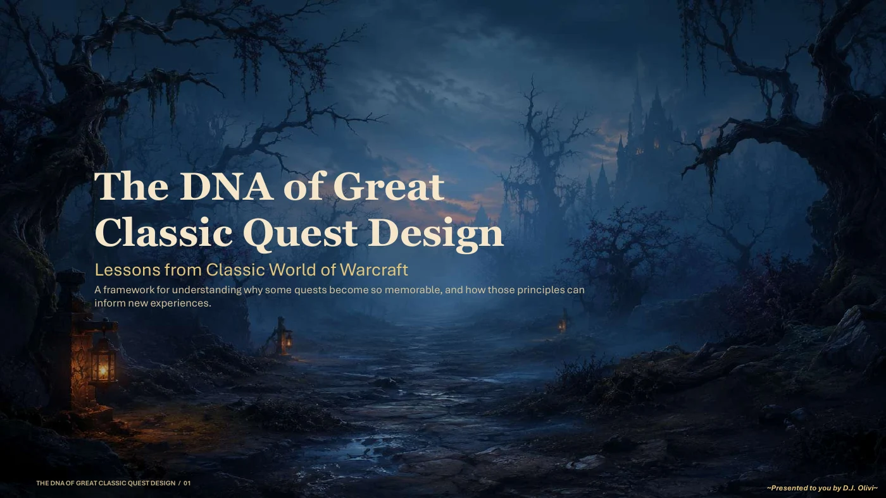

Game Design
Systems, quests, and player experience.
A quest design case study, personal Unreal Engine projects, and technical design experience from Diablo IV.

The DNA of Great Classic Quest Design
Quest Design Case Study · World of Warcraft
A design case study exploring why some Classic World of Warcraft quests remain memorable, breaking the experience into six principles: curiosity, exploration, pacing, worldbuilding, empathy, and shared adventure.
PDF · Opens in a new tab
Independent portfolio analysis based on publicly available World of Warcraft content. Not official Blizzard Entertainment material and does not contain confidential or unreleased information.
Sparklight
A personal action-roguelite built in Unreal Engine (4.12–5.2) with Blueprints, supporting both character and tower progression. Four archetype-based class kits — Knight, Ranger, Mage, Rogue — each with unique resource economies and ability synergies, plus a tower system built on shared inheritance for attack logic, targeting, and upgrades.


Sunken Temple
A solo adventure project in the tomb-raider tradition with navigation-driven exploration and environmental puzzles through waterfall caves and a fire-lit ruined temple.
Tiderunner
A cozy platforming puzzle game with floating geometric platforms that drift over a sunset beach, with neon accents marking the path forward.
Neon Ascent
A puzzle-platformer set against a neon-lit night sky with precise platforming and mechanics built around getting from point A to point B in style, with hazards to dodge along the way.
Spellbound
An open-world mage RPG built as a personal systems-design exercise with talent trees, merchant/shop economies, combat, stamina, and health systems all built from scratch to learn how those pieces fit together.
Nanite Protocol
A first-person shooter class project built during my Game Design degree, with health and nanite pickup systems and core FPS mechanics implemented from scratch.
Diablo IV — Technical design
During a concurrent technical design assignment at Blizzard Entertainment, I designed, scripted, validated, and shipped 100+ legendary affixes and 10+ player abilities for Diablo IV using Lua and proprietary tooling.